This project has two parts. In Part A, I use the pretrained text-to-image flow model PixNerd-XXL-P16-T2I (512×512 outputs) to denoise, generate and edit images. Flow time runs from t = 0 (pure Gaussian noise) to t = 1 (a clean image), with xt = (1 − t)ε + t x1. The model predicts the velocity vθ(xt, t, c), and images are sampled by integrating this velocity with Euler steps. Unless stated otherwise, the step size is h = 0.02, the CFG weight is w = 7, and the seed is 180. In Part B, I build a UNet from scratch and train it on MNIST: first as a one-step denoiser, then as a flow matching model conditioned on time, and finally on both time and digit class with classifier-free guidance.
Part A · 1.1
Constructing Noisy Training Inputs
The forward process mixes a clean image x1 with Gaussian noise ε. One noise tensor is sampled once and reused for all three times. At t = 0 the result is exactly the noise and at t = 1 it is exactly the image.
x_t = (1 − t) · ε + t · x₁ # ε ~ N(0, I), sampled once and reused
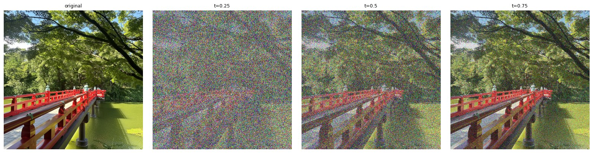
My image and its noisy versions at t = 0.25, 0.50, 0.75. Larger t keeps more of the image.
Part A · 1.2
Classical Denoising
As a baseline without a learned model, I first divide by t to restore the image amplitude (xt/t = x1 + ((1 − t)/t)ε), then apply a Gaussian blur. For each noise level I tried σ ∈ {1, 2, 4, 8, 16} and kept the one with the lowest MSE to the clean image.
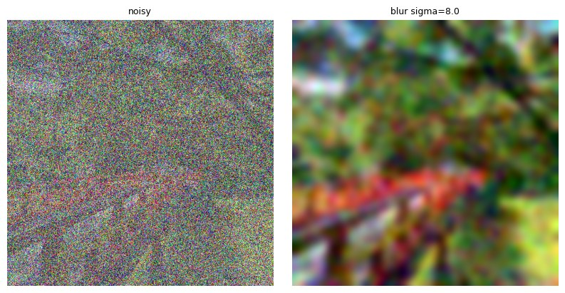
t = 0.25: noisy input and best Gaussian blur
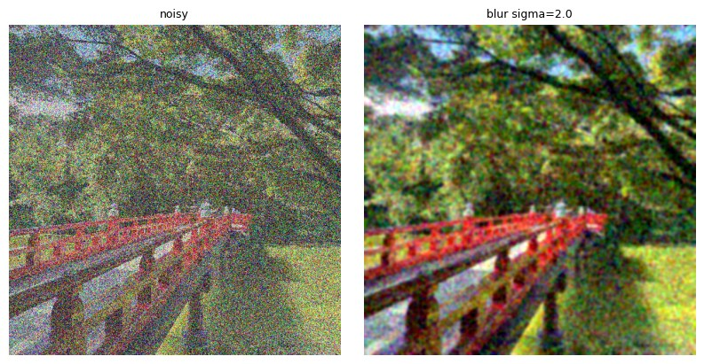
t = 0.50: noisy input and best Gaussian blur
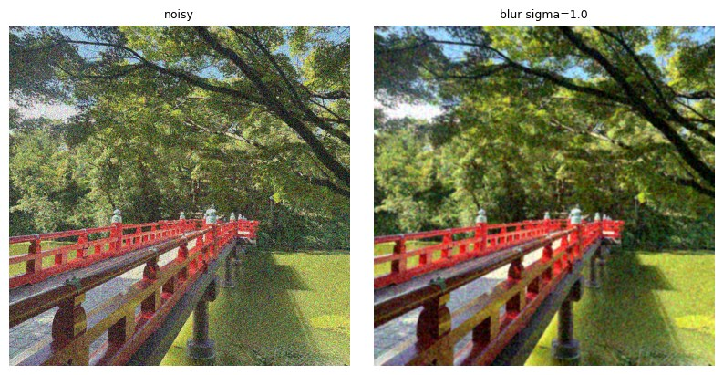
t = 0.75: noisy input and best Gaussian blur
Part A · 1.3
One-Step Denoising
With the prompt "a high quality photo", one velocity prediction is used to extrapolate straight to t = 1:
x̂₁ = x_t + (1 − t) · v_θ(x_t, t, c)
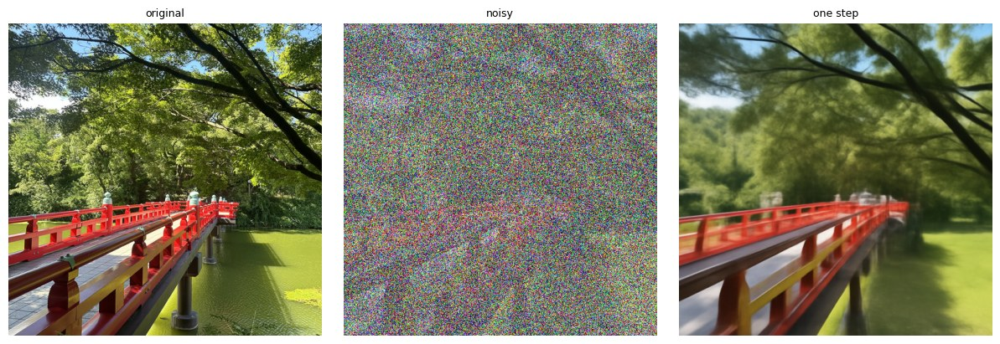
t = 0.25: original, noisy input, one-step estimate
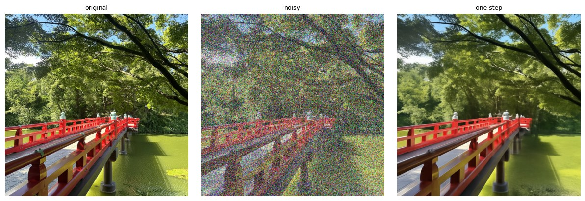
t = 0.50: original, noisy input, one-step estimate
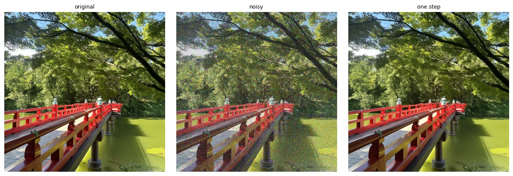
t = 0.75: original, noisy input, one-step estimate
Part A · 1.4
Visualizing Velocity
For each saved noisy input I compare the update the model adds, (1 − t)v̂t, with the update that would exactly recover my image, (1 − t)vgt = x1 − xt. Both updates share one symmetric RGB scale with zero at middle gray. The error map is the per-pixel RMS over RGB, with the same color limits at all three times.
predicted update = (1 − t) · v_θ(x_t, t, c)
ground truth = (1 − t) · (x₁ − ε) = x₁ − x_t
error(pixel) = sqrt( mean over RGB of (predicted − ground truth)² )
Original image
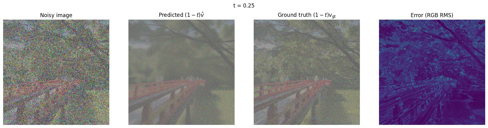
t = 0.25: noisy image, predicted update, ground-truth update, error
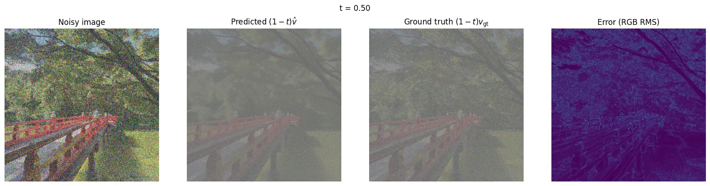
t = 0.50
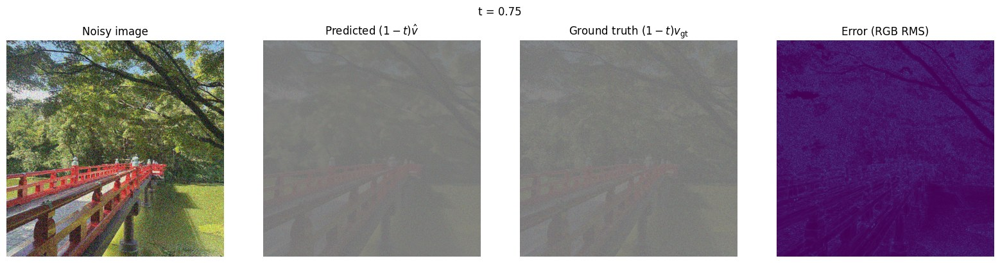
t = 0.75
Part A · 1.5
Iterative Denoising with Euler Sampling
Euler sampling takes small steps xt+h = xt + h·v(xt, t). It recomputes the velocity after every step and shortens the last step so it ends exactly at t = 1.
x ← x_start, t ← t_start
while t < 1:
h ← min(step_size, 1 − t) # shorten the last step
x ← x + h · v(x, t) # recompute velocity every step
t ← t + h
return x
Trajectory (initial state, every fifth update, final)
Gaussian blur removes some noise but leaves blotchy color artifacts and wipes out the leaf texture. One-step denoising gives a clean but slightly soft result, since a single prediction averages over the many images consistent with the noisy input. Euler denoising produces the sharpest, most photo-like image, with crisp leaves, railings and water. Its MSE is still higher than one-step, because the details it adds are plausible but do not match the original pixel by pixel.
Part A · 1.6
Generating Images from Noise
Setting t_start = 0 and starting from pure Gaussian noise turns the same sampler into a generator (50 Euler steps). Five seeds with the prompt "a high quality photo", without guidance:
Seeds 180–184, "a high quality photo", no CFG
The prompt strongly favors generated photos of human(all five samples are people). But without guidance the quality is inconsistent. For example, Seed 180 has a blank face without eyes and nose, seed 183 has a distorted face without clear eyes, and the body on seeds 181 is naked and the structure is also wrong. Only seed 184 looks like a clean photo but still gives a unnatural feeling.
Part A · 2.1
Classifier-Free Guidance
CFG evaluates the same xt and t with the prompt and with the empty prompt, then extrapolates away from the unconditional prediction: vcfg = vc + w(vc − vu), with w = 7. Setting w = 0 reproduces the conditional prediction exactly (checked).
With the same initial noise, CFG fixes the artifacts from 1.6. Now every sample is now a sharp and realistic photo with a clear face and right structure.
Part A · 3.1
Image-to-Image Editing
Following SDEdit, I noise an image to a starting time tstart with the forward process and then integrate back to t = 1 with CFG and the prompt "a high quality photo". Smaller tstart means more noise and a larger edit. Starting times: 0.02, 0.04, 0.06, 0.10, 0.14, 0.25, 0.50.
x ← (1 − t_start) · ε + t_start · x₁ # noise the input to t_start
integrate from t_start to 1 with Euler steps, using v_cfg
return x
Campanile
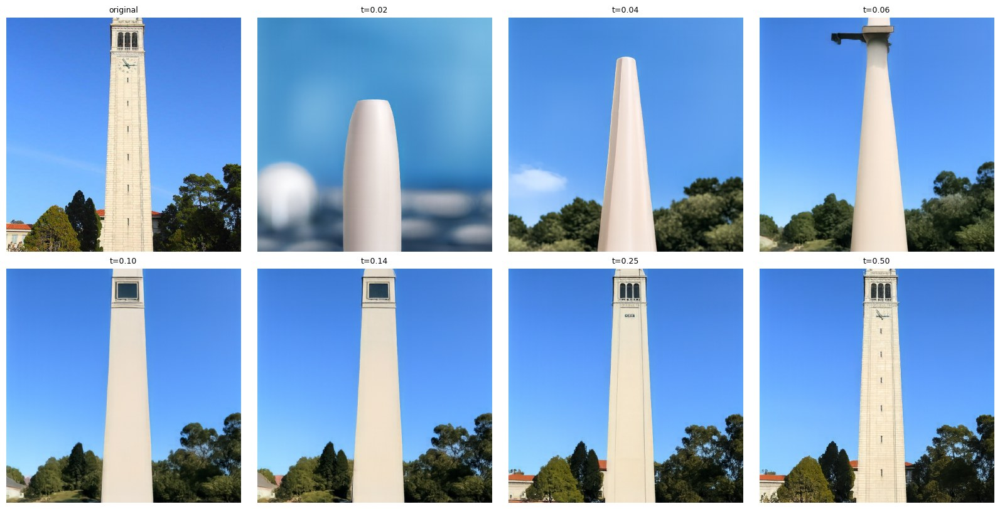
My image 1: bridge
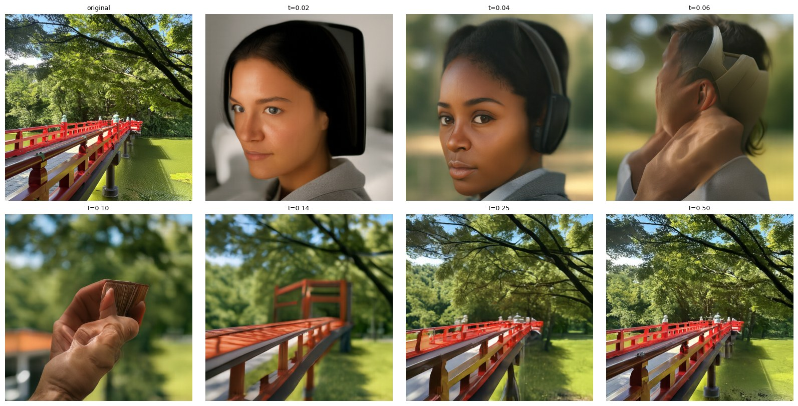
My image 2
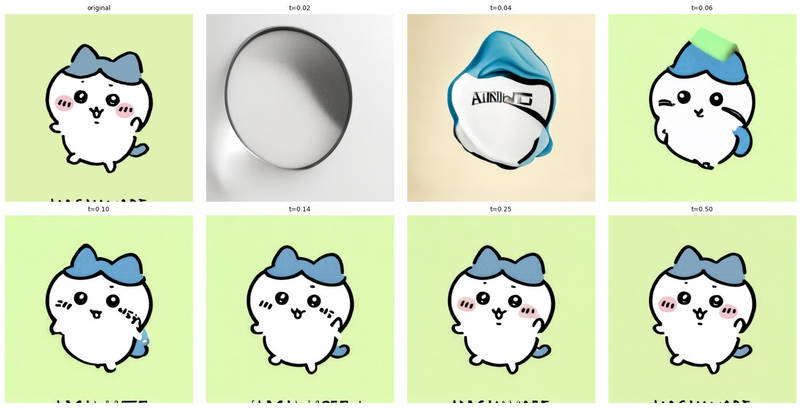
Web image
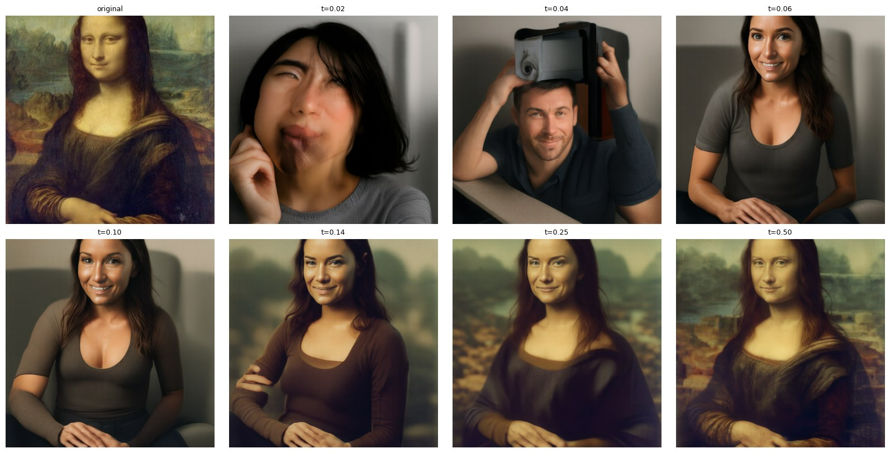
Hand-drawn image 1: house
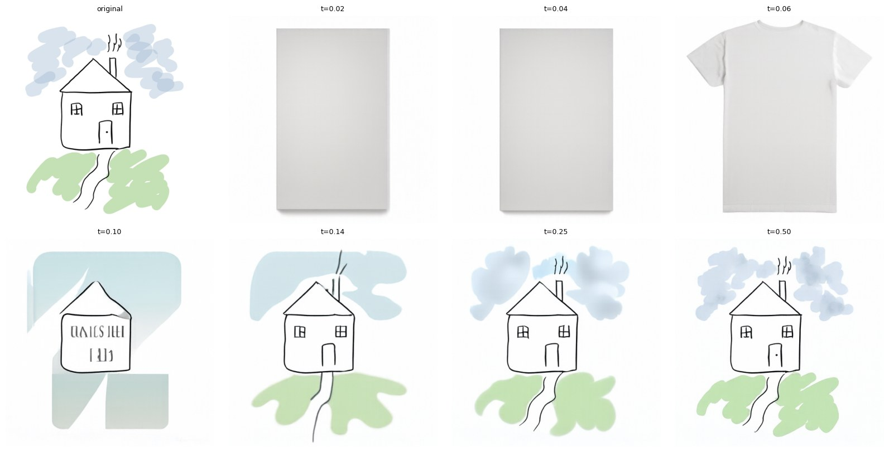
Hand-drawn image 2
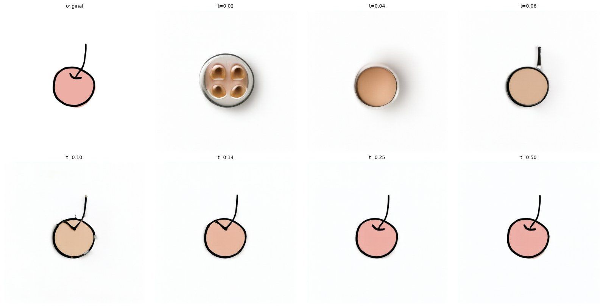
Part A · 3.2
Text-Guided Image Editing
The same procedure and starting times as 3.1, but with a prompt that describes the edit instead of "a high quality photo".
Campanile → syringe
Prompt: "a photograph of a giant syringe standing upright with the needle pointing to the sky"
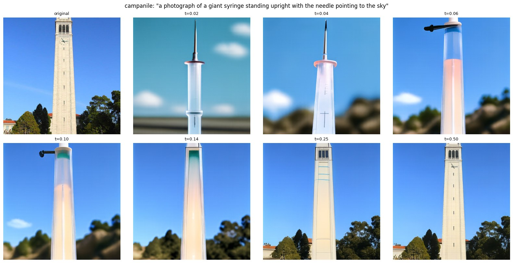
Bridge → winter
Prompt: "a photograph of a red bridge covered in snow in a winter forest"
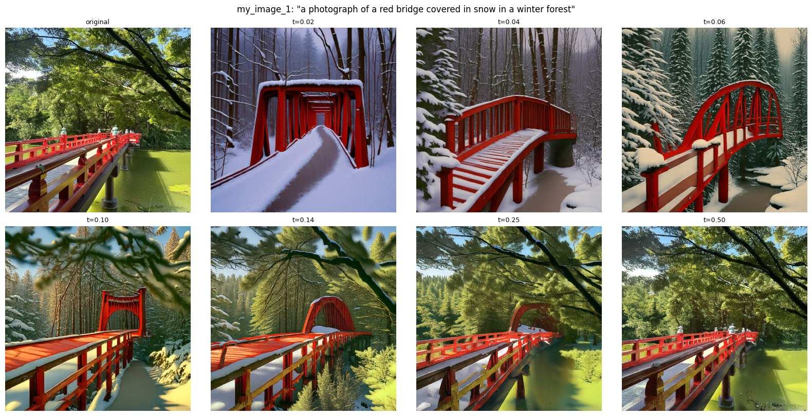
My image 2 → plush toy
Prompt: "a photograph of a soft plush toy sitting on a table"
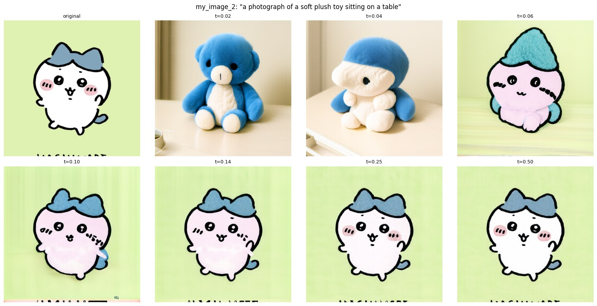
Part A · 3.3
Visual Anagrams
At every Euler step, the image is denoised upright with prompt p1 and, after a 180° rotation, with prompt p2. The second velocity is rotated back and the two are averaged: v = (v1 + flip(v2))/2, where both are CFG velocities.
for each Euler step at time t:
v₁ = v_cfg(x_t, t, p₁)
v₂ = flip( v_cfg(flip(x_t), t, p₂) ) # flip = rotate 180°
v = (v₁ + v₂) / 2
x_t ← x_t + h · v
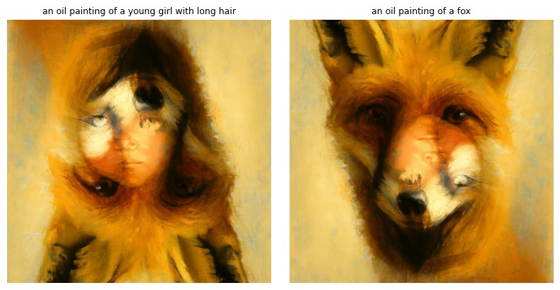
Upright: "an oil painting of a young girl with long hair" Rotated 180°: "an oil painting of a fox"
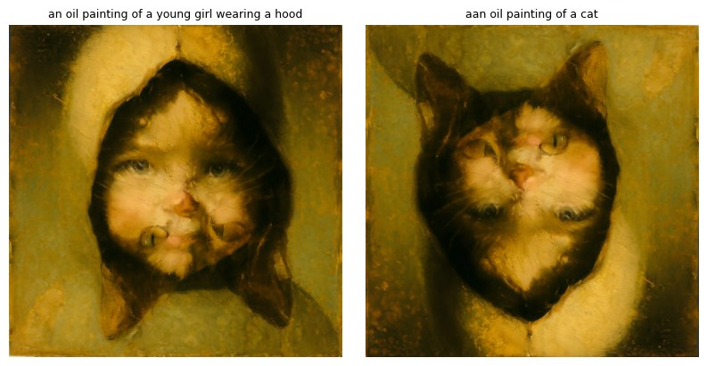
Upright: "an oil painting of a young girl wearing a hood" Rotated 180°: "an oil painting of a cat"
Part A · 3.4
Hybrid Images
Following Factorized Diffusion, two CFG velocities are computed on the same xt. The low frequencies of the "distant" prompt are combined with the high frequencies of the "close" prompt: v = lowpass(v1) + (v2 − lowpass(v2)). The low-pass is a Gaussian blur with kernel size 265 and σ = 16.
for each Euler step at time t:
v₁ = v_cfg(x_t, t, p_distant)
v₂ = v_cfg(x_t, t, p_close)
v = lowpass(v₁) + (v₂ − lowpass(v₂)) # Gaussian, kernel 265, σ = 16
x_t ← x_t + h · v
Bamboo forest / panda
Full size (close): "a lithograph of a bamboo forest"64×64 (distant): "a lithograph of a panda"
Wildflowers / bunny
Full size (close): "a lithograph of a field of wildflowers"64×64 (distant): "a lithograph of a bunny"
Project 3 · Part B
Flow Matching from Scratch
All models in Part B are trained on the MNIST training set (pixels in [0, 1]) and evaluated on the test set.
Part B · 1.1
Implementing the UNet
The denoiser is a small UNet built from simple blocks: Conv (3×3 conv + BatchNorm + GELU, same size), DownConv (stride-2 conv, halves the size), UpConv (transposed conv, doubles the size), Flatten (7×7 average pool to 1×1) and Unflatten (transposed conv from 1×1 back to 7×7). ConvBlock, DownBlock and UpBlock stack these to make the network deeper.
The encoder shrinks the image to a 1×1 summary of the whole digit, and the decoder expands it back. Skip connections concatenate encoder features of the same size into the decoder, so fine details lost during downsampling can be recovered.
Part B · 1.2
Using the UNet to Train a Denoiser
Training pairs are made by adding Gaussian noise to a clean digit: z = x + σε, ε ~ N(0, I). The denoiser Dθ is trained with the L2 loss ‖Dθ(z) − x‖2.
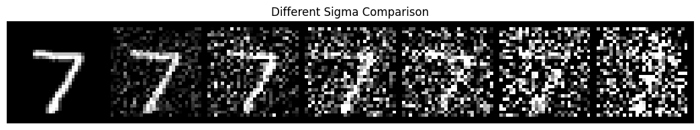
Noising process on one test digit, σ = 0.0, 0.2, 0.4, 0.5, 0.6, 0.8, 1.0 (left to right)
Part B · 1.2.1
Training
UNet with D = 128, trained for 5 epochs to denoise σ = 0.5, with Adam (lr 1e-4) and batch size 256. Noise is drawn fresh every time a batch is loaded, so the network never sees the same noisy image twice.
for each batch x from the training set:
z ← x + 0.5 · ε, ε ~ N(0, I)
loss ← MSE(UNet(z), x)
gradient step on loss
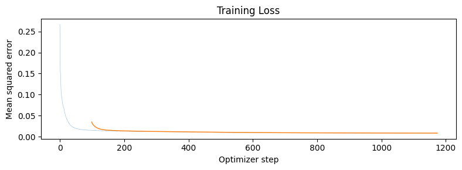
Training loss (light: every step, dark: 100-step average)
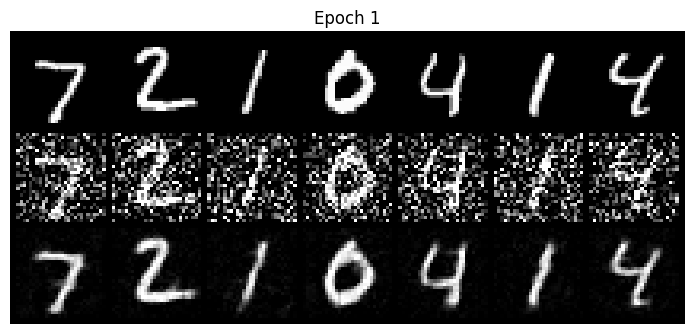
After epoch 1. Rows: clean test digit, noisy input (σ = 0.5), denoised output
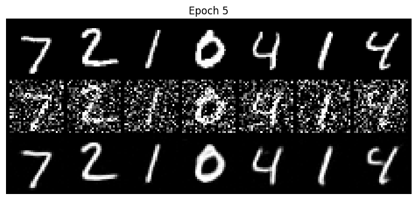
After epoch 5. Same layout
The loss drops from about 0.27 to under 0.02 within the first ~100 steps and then slowly approaches 0.01. After one epoch the digits are already recovered but slightly blurry; after five epochs the strokes are sharper and cleaner.
Part B · 1.2.2
Out-of-Distribution Testing
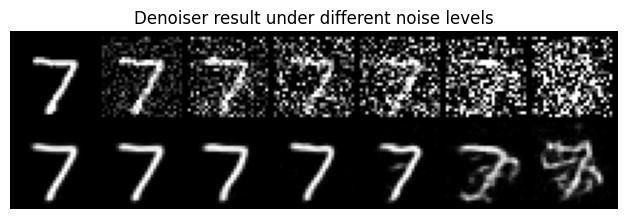
Same test digit, σ = 0.0 to 1.0. Top: noisy input. Bottom: output of the denoiser trained only on σ = 0.5
Part B · 1.2.3
Denoising Pure Noise
Same training setup as 1.2.1, but the input is pure noise z = ε with no digit in it, and the target is still a clean digit.
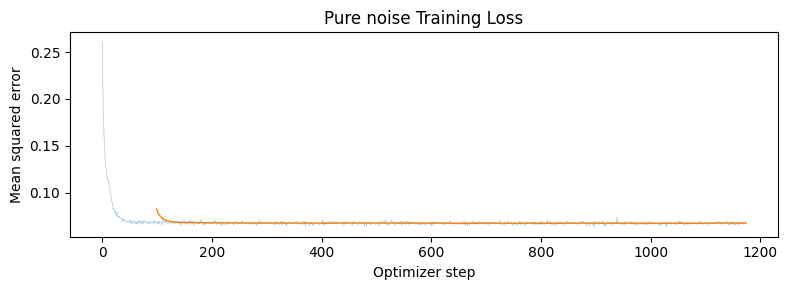
Training loss
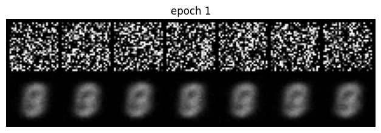
After epoch 1. Top: pure noise input. Bottom: output
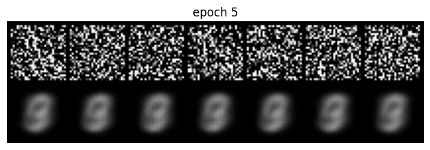
After epoch 5
Pattern: every input gives almost the same output which looks like several digits (3, 8, 9) overlapping with each other. The output barely changes between epoch 1 and epoch 5 and the loss flattens at about 0.07 after ~50 steps which is much higher than the ~0.01 reached in 1.2.1.
Why: the input noise is independent of the target digit so it carries no information about which digit to draw. Under an MSE loss, the best possible prediction when the target is unknown is the point that minimizes the average squared distance to all targets(i.e. the mean of the training images). The model learns to ignore its input and output this average digit and the loss is the average distance between training digits and their mean. One-step denoising therefore cannot generate clear and varied digits from noise.
Part B · 2.1
Adding Time Conditioning to the UNet
For flow matching the UNet predicts the velocity uθ(xt, t) ≈ x1 − x0 along the path xt = (1 − t)x0 + t x1, so it also needs to know t. The scalar t ∈ [0, 1] goes through two FCBlocks (Linear → GELU → Linear), giving one scale per channel, and these modulate the decoder:
t₁ = FCBlock(1 → 2D)(t), t₂ = FCBlock(1 → D)(t)
unflatten ← unflatten * t₁ # 2D×7×7, scaled per channel
up1 ← up1 * t₂ # D×14×14, scaled per channel
everything else is the same as the unconditional UNet
Part B · 2.2 – 2.3
Training and Sampling the Time-Conditioned UNet
D = 64, batch size 64, 10 epochs, Adam with initial lr 1e-2 and an exponential scheduler (γ = 0.11/10, stepped once per epoch). Sampling uses 50 Euler steps from pure noise, with a fixed seed so all epochs start from the same noise.
Training (one batch): Sampling:
x₁ ← clean digits x ← N(0, I)
t ~ Uniform[0, 1], x₀ ~ N(0, I) for i = 0 … T−1:
x_t ← (1 − t)·x₀ + t·x₁ t ← i / T
loss ← MSE(u_θ(x_t, t), x₁ − x₀) x ← x + (1/T) · u_θ(x, t)
gradient step on loss return x
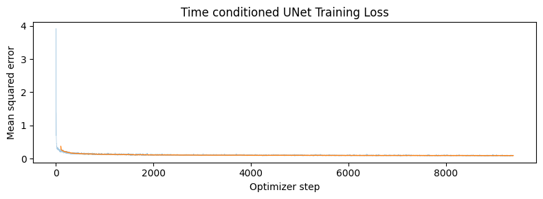
Training loss, time-conditioned UNet
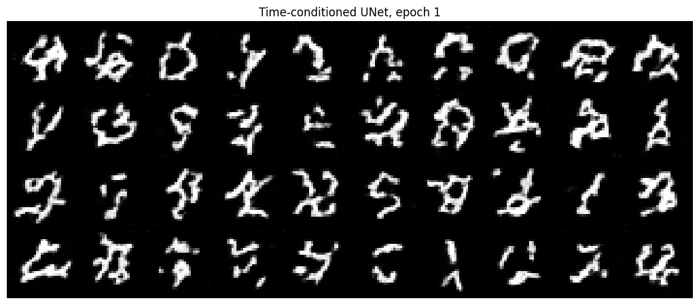
Epoch 1
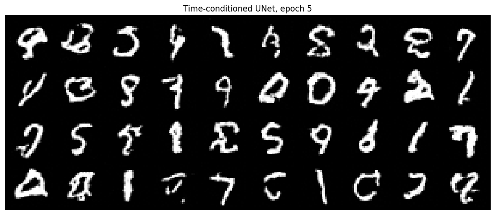
Epoch 5
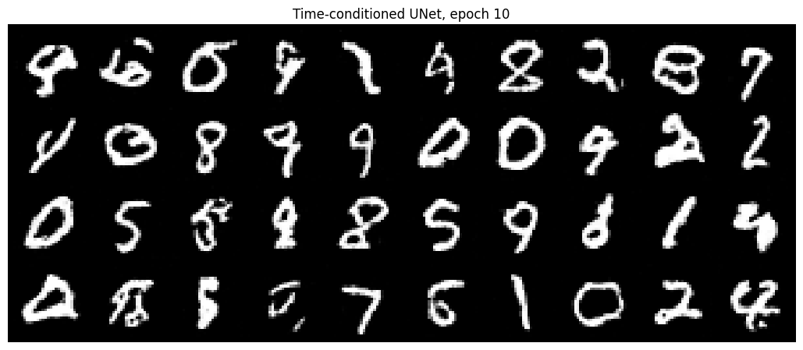
Epoch 10
Part B · 2.4
Adding Class Conditioning to the UNet
The digit class c is turned into a one-hot vector of length 10 and passed through two more FCBlocks. Class scales the features and time shifts them. To also learn an unconditional model for classifier-free guidance, c is replaced with the zero vector 10% of the time during training (puncond = 0.1).
c ← one_hot(c); with probability 0.1: c ← 0
unflatten ← c₁ * unflatten + t₁
up1 ← c₂ * up1 + t₂
Sampling with CFG (γ = 5):
u = u_θ(x_t, t, 0) + γ · ( u_θ(x_t, t, c) − u_θ(x_t, t, 0) )
x_t ← x_t + (1/T) · u
Part B · 2.5 – 2.6
Training and Sampling the Class-Conditioned UNet
Same setup as the time-conditioned model (D = 64, batch 64, 10 epochs, Adam lr 1e-2 with the exponential scheduler). Samples use 300 Euler steps, guidance scale γ = 5 and a fixed seed. Each column is one digit, four samples each.
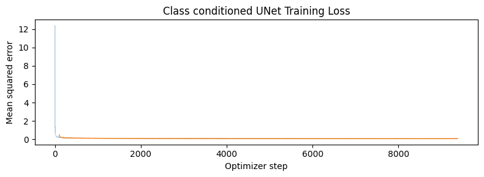
Training loss, class-conditioned UNet
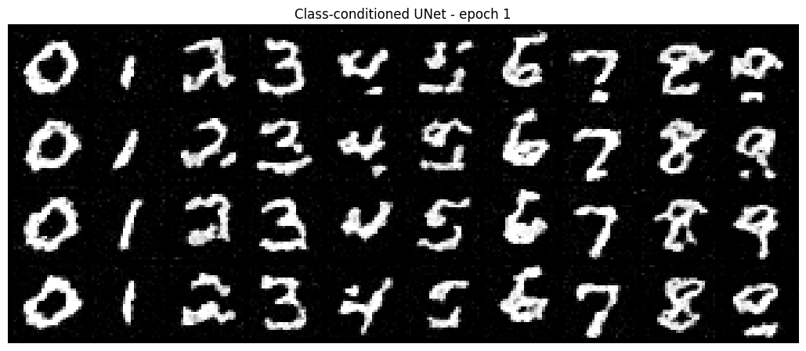
Epoch 1
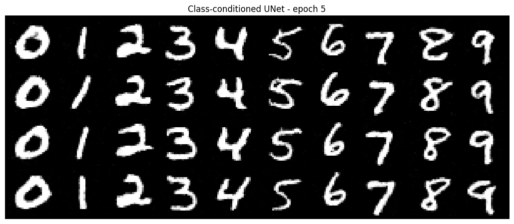
Epoch 5
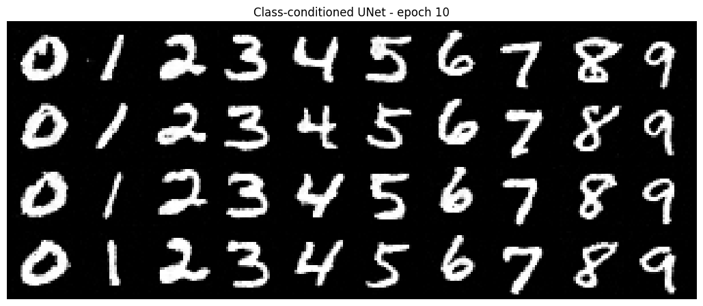
Epoch 10
Class conditioning converges much faster than time conditioning alone. Already after epoch 1 every column shows the outline of the requested digit. By epoch 5 the digits are clear and epoch 10 gives sharp handwriting for all ten classes.
Removing the learning-rate scheduler
The scheduler starts the learning rate at 1e-2 and slowly lowers it to about 1e-3. Large steps help the model learn fast at the beginning. Small steps near the end let it settle. Without the scheduler, I need one fixed learning rate instead. I picked 1e-3, which is where the scheduler ends up. I trained a new model from scratch with this value and kept every other setting the same.
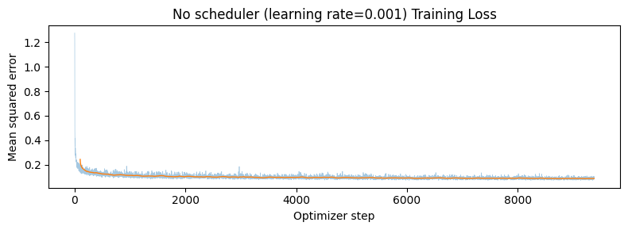
Training loss, constant lr = 1e-3, no scheduler
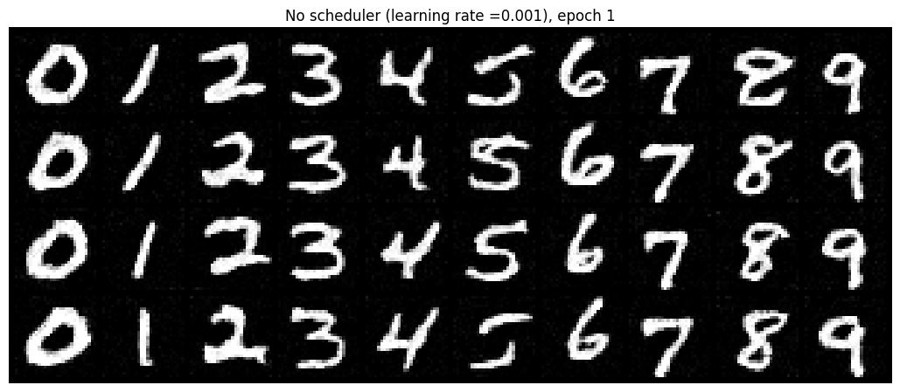
No scheduler, epoch 1
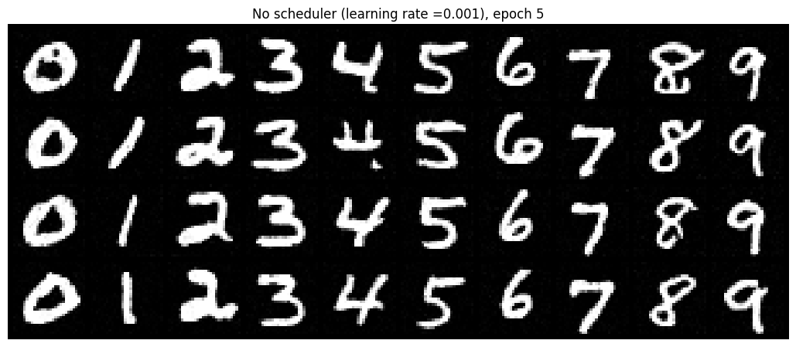
No scheduler, epoch 5
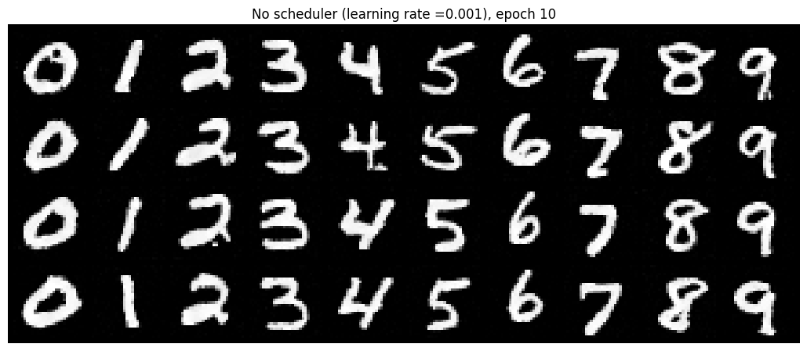
No scheduler, epoch 10
The fixed learning rate works just as well. By epoch 10, both models draw clean and correct digits in every column. The fixed one is even better at the start. Its epoch 1 samples are already clean, but the scheduled model's epoch 1 samples are still noisy. Its loss also starts much lower. The first spike is about 1.3 instead of about 12. So 1e-2 seems too large for this small network at the beginning. The downside is that I have to choose the learning rate by hand. If it is too large, training stays noisy at the end because the weights keep jumping around. If it is too small, the model learns slowly and may need more epochs. Here 1e-3 was small enough to be stable and large enough to finish learning in 10 epochs.